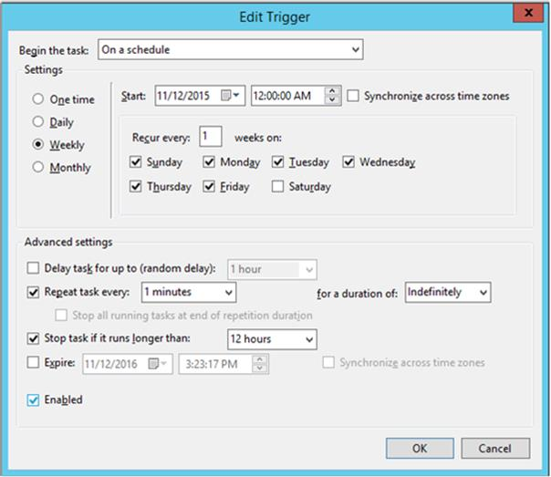

The Fusion agent contains a series of connectors (.NET assemblies) that understand the target metadata location. For example, when requesting that the agent crawl a SQL Server database, the agent must have the SQL Server connector that understands the system metadata tables within SQL Server.
The following connectors are shipped with Infogix Data3Sixty:
It is also possible to create your own connector to work with a custom metadata store.
At a minimum, the server running the Fusion agent should contain the following:
| Configuration | Value |
|---|---|
| Server operating system | Windows 2012, 2012 R2, or 2016 |
| Processors | 2 cores |
| Memory | 4 GB RAM (minimum) |
| Software | .NET Framework 4.5.1 |
| Network requirements | Web access, access to network resources like databases. This should be a machine on your local network / domain. |
| Port |
443 (SSL over TLS 1.2) Fusion uses this port configured via https to transmit metadata to your cloud instance of Infogix Data3Sixty. Note: You may need to confirm firewall openings to ensure that the information can be transmitted. |
The following permissions are required on the Windows account that is configured to run the fusion process:
https://<client>.data3sixty.com)When scanning SQL Server databases, the following permissions must be applied to the account that you are authenticating to the database with:
grant select any table to <user_name>;
grant select DBA_CONSTRAINTS to <user_name>;
grant select DBA_DB_LINKS to <user_name>;
grant select DBA_INDEXES to <user_name>;
grant select DBA_MVIEWS to <user_name>;
grant select DBA_OBJECTS to <user_name>;
grant select DBA_PROCEDURES to <user_name>;
grant select DBA_SEQUENCES to <user_name>;
grant select DBA_TAB_COLS to <user_name>;
grant select DBA_TABLES to <user_name>;
grant select DBA_TRIGGER_COLS to <user_name>;
grant select DBA_TRIGGERS to <user_name>;
grant select DBA_VIEWS to <user_name>;
grant select SYS.ALL_USERS to <user_name>;
When scanning SQL Server databases, the following permissions must be applied to the account that you are authenticating to the database with:
ALTER ROLE db_datareader ADD MEMBER <user_name>
GRANT VIEW SERVER STATE TO <user_name>;
GRANT VIEW DEFINITION TO <user_name>;
| Database | Driver download |
|---|---|
| .NET 4.5.1 | If running the agent on a Windows 2012 server or higher, .NET 4.5.1 should be pre-installed. If not, please run the .NET installer by downloading the installer at the following link: https://www.microsoft.com/en-us/download/details.aspx?id=40773 |
| AWS Redshift | If not already installed, download and install the Redshift ODBC drivers. For 32-bit: http://d3s.blob.core.windows.net/agent/AmazonRedshiftODBC32-1.3.7.msi For 64-bit: http://d3s.blob.core.windows.net/agent/AmazonRedshiftODBC64-1.3.7.msi |
| DB2 | https://d3s.blob.core.windows.net/agent/ibm_data_server_driver_package_win64_v10.5.exe |
| Sybase | https://d3s.blob.core.windows.net/agent/Sybase_SQLA17_Windows_Client.exe |
Infogix Data3Sixty.Fusion Agent, then click Next.
ENVIRONMENT_NAME API_KEY API_SECRET
For example:
demo 12345 hgh5$3j2u26
Tip: You will find the key and secret from the "API Info.txt" file that you received from Infogix Support.

The Fusion agent should now be configured to run for your environment. As a test, after two minutes there should be a newly created file called AgentLog in the folder where the agent executable is located.